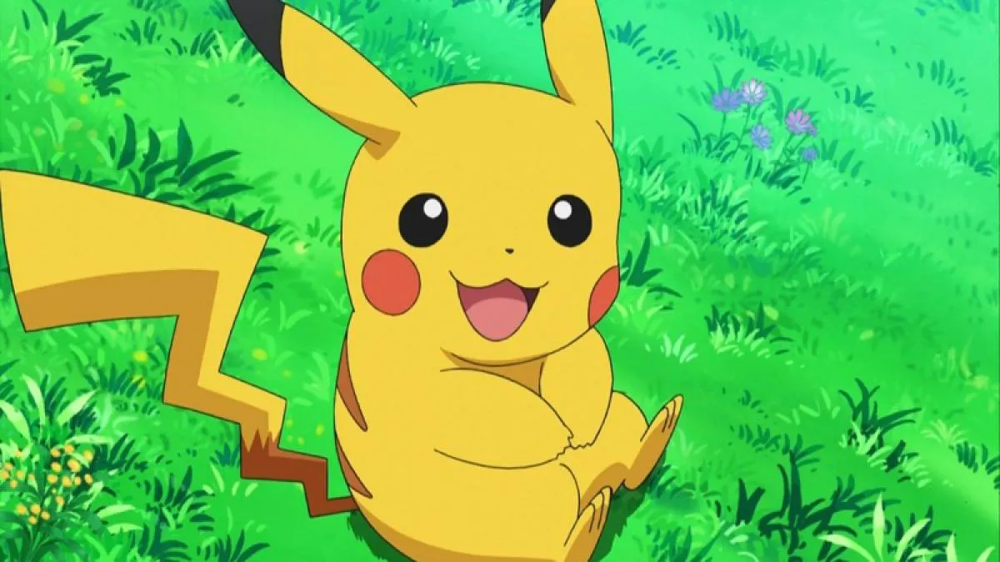
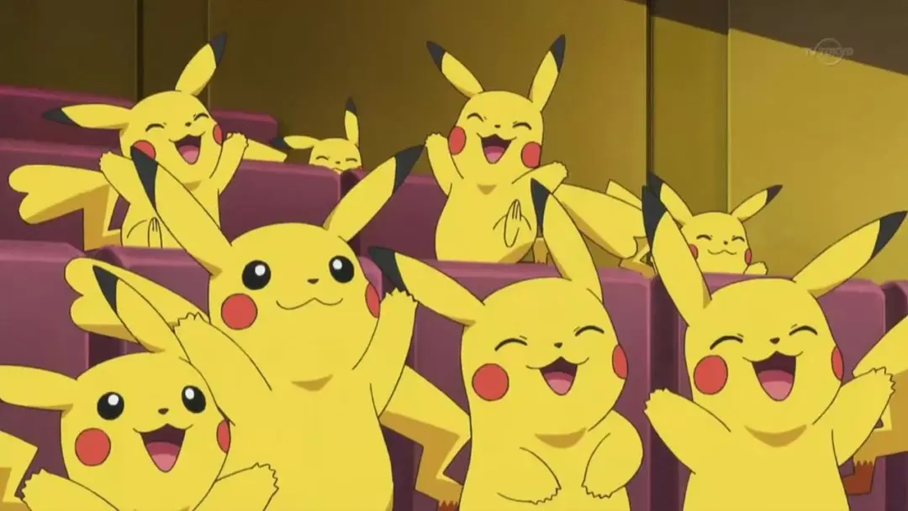
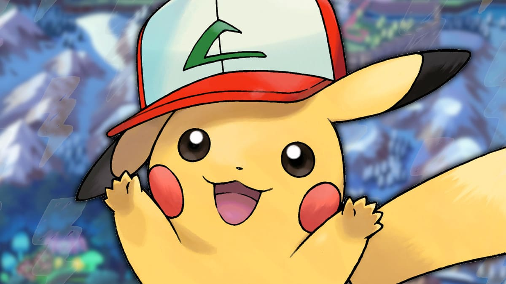
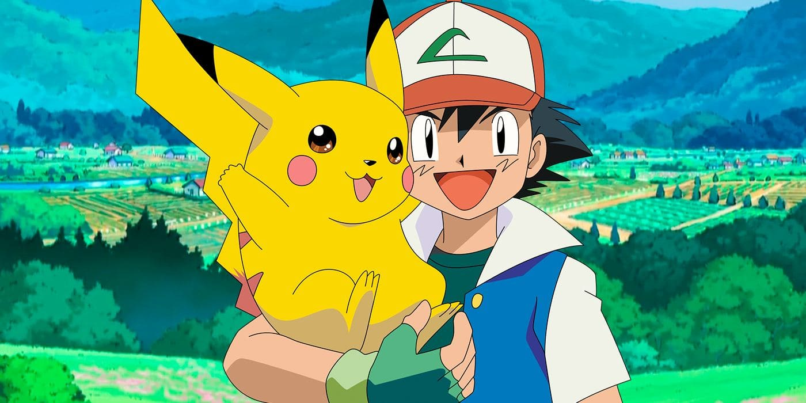
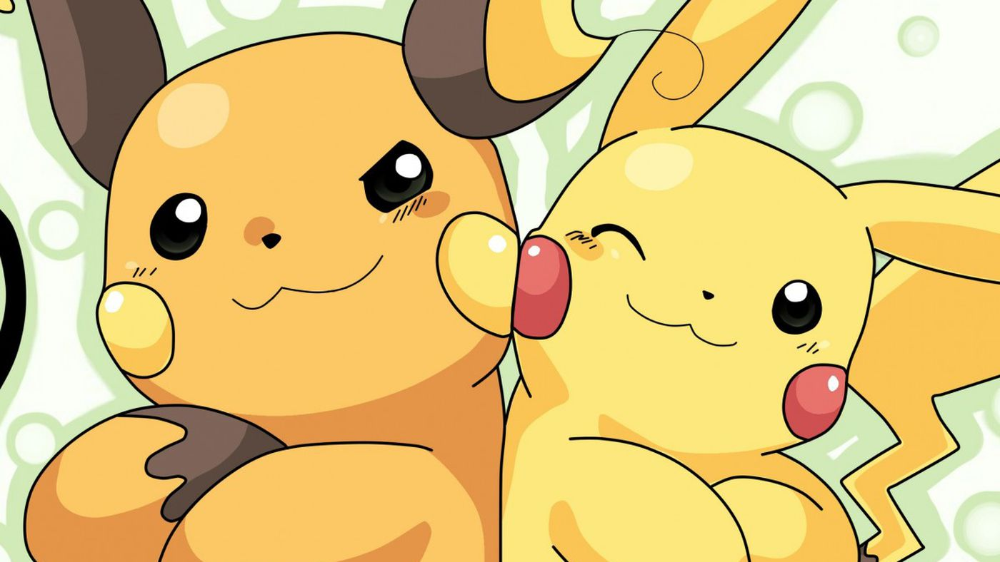
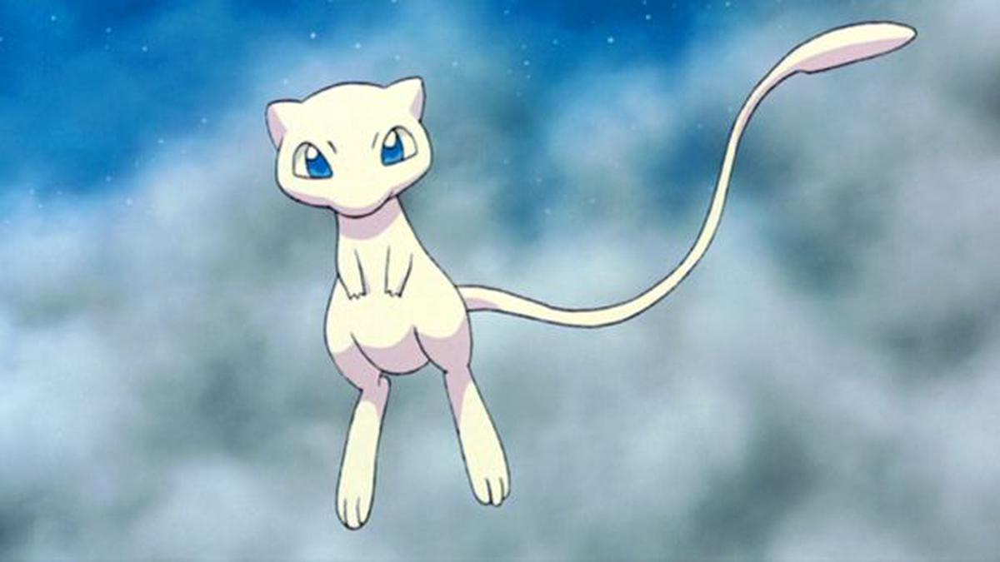
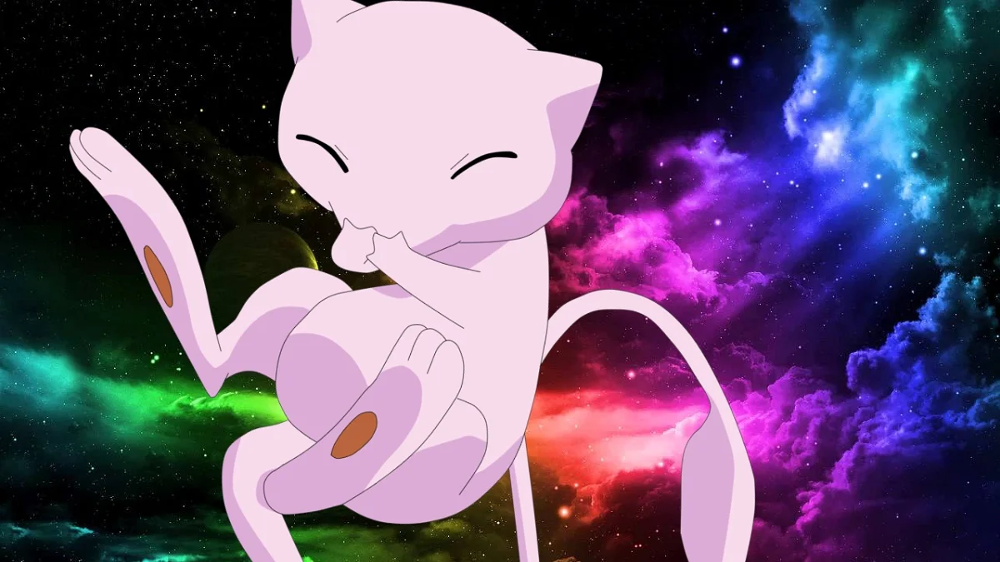
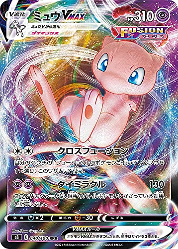

Datos interesantes de Pikachu y Mew
Pikachu
Biologia de Pikachu
Pikachu almacena una gran cantidad de electricidad en sus mejillas. Estas parecen cargarse eléctricamente durante la noche mientras duerme. Las mejillas de Pikachu también pueden ser recargadas mediante una descarga eléctrica, como se ha podido observar en algunos episodios del anime. A veces suelta unas pequeñas descargas cuando se acaba de despertar. Las mejillas son las que generan electricidad, pero esta es conducida y descargada por la punta de su cola produciendo descargas eléctricas, que aumentan de poder dependiendo del estado de ánimo de Pikachu. Muchas veces, en las tormentas se juntan y absorben electricidad de los relámpagos.
Pikachu es un pequeño roedor cuya morfología se encuentra basada en un animal llamado pika, el cual es pariente de los conejos y habita principalmente en las praderas norteamericanas. Su cuerpo es de color amarillo con rayas marrón en su espalda y la base de la cola, con la punta de sus orejas de color negro, y polos eléctricos rojos en sus mejillas. Tiene una cola con forma de rayo, en los machos, pero en las hembras la punta de la cola tiene forma de corazón.
 Historia de Pikachu
Pregunta: ¿Pikachu es un ratón, rata, conejo o gato? Respuesta, ninguna de las anteriores. La inspiración detrás de Pikachu es una ardilla. No lo decimos nosotros, lo dice una de las diseñadoras de personajes del Pokémon original de 1996. La revista japonesa Yomiuri Shimbun platicó con Atsuko Nishida, quien trabajó en como artista conceptual en Game Freak durante la época en la que salieron los Pokémon Rojo, Verde y Azul; y a quien los fans de hueso colorado identifican como la creadora de Pikachu. La ilustradora contó que en aquellos años le encargaron crear un “pokémon eléctrico”, y que su primer concepto era algo parecido a un “daifuku (un panecillo dulce hecho de arroz) alargado con orejas” . Sin embargo, el diseño no gustó y le pidieron mejorarlo.
En esa época, Nishida quería tener por mascota una ardilla, así que se inspiró en este animal para crear la versión definitiva de Pikachu. “Me gustan los animales, y luego tuve un hurón y una tortuga en casa. Como pensaba que las formas en que las ardillas se movían eran cómicas y lindas, yo quería una”, narró para Yomiuri Shimbun. “En ese momento, realmente me gustaban las ardillas, así que quería que el personaje tuviera las mejillas hinchadas. Las colas de ardilla son lindas. Sin embargo, quería que el personaje tuviera un elemento relámpago, así que lo hice con la forma de un rayo”, dijo Nishida en la entrevista. En cuanto al nombre de Pikachu, Nishida explicó que es la combinación de “pika”, un término onomatopéyico que se usa para describir la luz intermitente; y la palabra “chu”, que según Nishida “sólo suena lindo”. “Aunque el personaje no se inspiró en un ratón, el presidente de Game Freak, Satoshi Tajiri, dijo que estaba inspirado en uno”, reveló la ilustradora quien, como buena japonesa, no quiso llevarle la contraria a su jefe y de allí la confusión sobre la categoría “mouse” (ratón) de Pikachu en el Pokédex. Cuando el anime de Pokémon se estrenó en 1997 el personaje volvió a cambiar su diseño, y lo ha seguido haciendo desde entonces con la llegada de nuevos videojuegos, series y películas.
 Mew
Biologia de Mew
La forma de Mew es derivada del gato esfinge, ya que es de aspecto felino y color rosado. Además, se dice que este Pokémon sí tiene pelo, solo que a tamaño microscópico, igual que el verdadero animal. Mew tiene grandes poderes psíquicos y los usa para esconderse o se oculta transformándose en otro Pokémon. Se cree que Mew tiene el ADN de todos los Pokémon existentes y por ello ostenta el título de el Pokémon más raro. En el anime, un grupo de científicos encontraron en una zona de Sudamérica un templo dedicado a él junto con el fósil de una de la pestañas de Mew. De este extrajeron ADN y, tras varios fallos en el experimento, lograron finalmente crear un clon de Mew, pero alterado genéticamente para ser más fuerte que el original; la creación fue bautizada como MewTwo. La razón más probable de que nadie lo haya visto tal vez se deba a que conoce el movimiento transformación, permitiéndole cambiar su forma a cualquier Pokémon u objeto (al igual que lo hace Ditto), posiblemente utilizaba este movimiento con frecuencia para pasar inadvertido. A pesar de su apariencia adorable, Mew es uno de los Pokémon más poderosos. También es uno de los más inteligentes. Puede hacerse invisible cuando quiera; intenta no hacerse notar cuando se acerca a la gente. Se cree que contiene la composición genética de todos los otros Pokémon y que puede realizar cualquier movimiento que puedan hacer estos. Su color es rosado, tiene unas extremidades delanteras pequeñas y unas patas posteriores alargadas. Su cola es larga y fina para su pequeño tamaño. Es un Pokémon muy tranquilo y pacífico, aunque también juguetón y travieso por naturaleza. Mew tiene la capacidad de transformarse en otros Pokémon, lo que lo hace muy difícil de ver. Su forma física es similar al embrión de un animal. Esto puede ser debido a que supuestamente Mew es el antecesor de todos los Pokémon. Los embriones de los Pokémon siguen la teoría de la recapitulación, según la cual los animales comparten una misma forma física en el embrión, repitiendo todas sus etapas evolutivas anteriores antes de nacer.
Historia de Mew
En una entrevista de Satoru Iwata (el antiguo presidente de Nintendo) a Morimoto, que colaboró como programador de los primeros juegos Rojo y Verde, reveló que Mew se añadió a los juegos en el último momento y que no intervenía de ningún modo en los videojuegos ni en la aventura. Solo estaba ahí para ser mostrado en algún evento si se daba la ocasión, pero podía haber quedado oculto por siempre.
« Morimoto: Añadimos a Mew justo al final. El cartucho estaba a tope y ya poca cosa más cabía, pero entonces al borrar el programa de limpieza que no iba en la versión final del juego, quedó libre un espacio minúsculo: 300 bytes, así que se nos ocurrió meter a Mew ahí. ¡Lo que nos pasó sería impensable hoy en día! (...) Bueno, fue una broma en la que participó todo el mundo, hasta Tajiri. No obstante, aunque Mew estaba en el juego… Iwata: …no tenía que aparecer en las partidas, ¿verdad? Morimoto: Exacto. A menos que se nos ocurriera un momento perfecto para sacarlo, el público no sabría de la existencia de Mew. Lo dejamos ahí, por si nos servía para alguna actividad posterior al lanzamiento; y si nadie quería usarlo, no pasaría nada por dejarlo tal cual. Iwata: Había muchas posibilidades de que al final Mew no apareciera en el juego. Morimoto: Exacto, pero debido a un problemilla imprevisto, Mew acabó apareciendo en la partida de algunos jugadores. Parecía que lo habíamos hecho a propósito, pero no era el caso, así que aunque causó todo tipo de problemas. Por suerte, acabó teniendo un efecto positivo. ».Un poco más adelante, en la entrevista, afirman que Pokémon Rojo y Verde habían tenido unas cifras de ventas bastante modestas, hasta que se anunció en el número de abril de 1996 de la revista CoroCoro Comic que se seleccionaría a veinte ganadores que podrían enviar el cartucho de su juego a Nintendo para que les cargaran los datos de Mew, donde hubo alrededor de 78.000 participantes. A partir de ese anuncio las ventas de esos videojuegos aumentaron hasta situarlo en el número uno en ventas semanales, por lo que Mew tuvo algo que ver en el éxito final de estos videojuegos. Teniendo en cuenta que no estaba previsto que Mew apareciera en los primeros videojuegos, esto explica el por qué Mew aparece después de Mewtwo en la Pokédex, a pesar de que en el anime se presenta a Mewtwo como clon de Mew.
